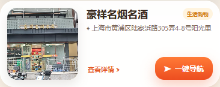

10月14日点位调整 · 本地审核记录
后续更新：5家餐饮点位已恢复调整前的位置。
小老板海鲜酒家、过水鱼馆、上海阿力烧烤、老城厢汤包馆、传统牛肉面的显示偏移已撤销。名称、地址、导航坐标、照片和短评不变；其余本轮修改保留，后续由你逐一手工调整。仅本地修改，未上线。
查看恢复记录 · 查看恢复核验
小老板海鲜酒家、过水鱼馆、上海阿力烧烤、老城厢汤包馆、传统牛肉面的显示偏移已撤销。名称、地址、导航坐标、照片和短评不变；其余本轮修改保留，后续由你逐一手工调整。仅本地修改，未上线。
查看恢复记录 · 查看恢复核验
后续补图：南外滩量身定制中心已改用新拍照片。
按你的选择采用“上海十六铺面料中心.webp”所拍的南外滩量身定制中心建筑。点位名称、地址、坐标均未改动，旧展示图保留；照片仍可点击放大。
查看本地点位效果 · 照片来源记录 · 页面核验记录
按你的选择采用“上海十六铺面料中心.webp”所拍的南外滩量身定制中心建筑。点位名称、地址、坐标均未改动，旧展示图保留；照片仍可点击放大。
查看本地点位效果 · 照片来源记录 · 页面核验记录

最新修改：4个点位去除“新增”标签，牛肉面羊肉汤增加3分短评。
牛肉面羊肉汤、传统牛肉面、中泰证券、瓜牛便利店在地图标记、点位卡片和分类列表中均不再显示新增标签。“牛肉面羊肉汤（阳光里店）”改名为“牛肉面羊肉汤”。位置、地址、照片均未动。新短评：“牛肉面吃下来感觉还可以，店面不大。想在附近吃碗面时可以列入备选，具体口味还是看个人喜好。”
查看短评效果 · 修改记录 · 页面核验记录
牛肉面羊肉汤、传统牛肉面、中泰证券、瓜牛便利店在地图标记、点位卡片和分类列表中均不再显示新增标签。“牛肉面羊肉汤（阳光里店）”改名为“牛肉面羊肉汤”。位置、地址、照片均未动。新短评：“牛肉面吃下来感觉还可以，店面不大。想在附近吃碗面时可以列入备选，具体口味还是看个人喜好。”
查看短评效果 · 修改记录 · 页面核验记录

以下为恢复前的历史审核快照
下方5家餐饮点位的位置说明和截图已被上述恢复操作撤销，不代表它们的当前显示位置。
仅本地修改，未提交、未推送、未上线。
康友四季已注释；5家密集餐饮点位分开显示；豪祥补图、阳光里店简名、T-ONE向南微调。此次调整导航坐标均保留，标记位置仅作显示微调。
康友四季已注释；5家密集餐饮点位分开显示；豪祥补图、阳光里店简名、T-ONE向南微调。此次调整导航坐标均保留，标记位置仅作显示微调。
修改明细
当前56个启用点位、54个有照片；8条轻量短评及原有照片放大功能保留。历史审核记录未改写。
| 点位 | 调整 | 说明 | 位置记录 |
|---|---|---|---|
| 康友四季经络足道（多稼路店） | 注释停用 | 地图、分类列表和搜索不再显示；原数据与照片均保留，可恢复。 | 原数据注释保留 |
| 传统牛肉面 | 标记偏右 | 在密集餐饮区域适度向右错开，保留你此前给定的导航坐标。 | 显示偏移 62 / 22 px 导航坐标未变 121.50125, 31.21243 |
| 小老板海鲜酒家 | 密集标记避让 | 与过水鱼馆、汤包馆、阿力烧烤及传统牛肉面分开显示。 | 显示偏移 -8 / -58 px 导航坐标未变 121.501115, 31.212487 |
| 过水鱼馆 | 密集标记避让 | 与附近同类标记错开，点位仍启用，照片及介绍保留。 | 显示偏移 -4 / -12 px 导航坐标未变 121.501158, 31.212449 |
| 老城厢汤包馆 | 密集标记避让 | 与阿力烧烤分开，阿力烧烤显示在本店右侧。 | 显示偏移 -16 / 32 px 导航坐标未变 121.501217, 31.212437 |
| 上海阿力烧烤 | 标记移至汤包馆右侧 | 调整显示顺序与间距，原地址、照片、短评和导航坐标保留。 | 显示偏移 30 / -20 px 导航坐标未变 121.501184, 31.212451 |
| t-one咖啡 | 标记向南微调 | 地图朝北状态下图标略向下移动；现有地址和导航坐标不变。 | 显示偏移 -8 / 40 px 导航坐标未变 121.500203, 31.211531 |
| 豪祥名烟名酒 | 补充照片 | 采用豪祥名烟名酒原图，非浩丞照片；按你的要求仅补图，不改任何位置相关信息。 | 导航坐标未变 121.500724, 31.212636 |
| 牛肉面羊肉汤（阳光里店） | 简化名称 | 名称改为“牛肉面羊肉汤（阳光里店）”，地图标签、介绍和列表同步读取新名称。 | 导航坐标未变 121.50049, 31.212606 |
真实地图本地预览
截图来自本地网页加载的真实高德底图，非示意图。点击图片可查看大图。


查看尚未应用显示偏移的对照截图（此对照仅关闭显示偏移，不恢复已注释的康友点位）

豪祥名烟名酒照片

照片门牌可读“多稼路236号-1”，与现有地址文字不同。本轮依据你“只补图片、位置不改”的明确要求保留现有地址，图片说明不另加门牌。源图未更改，输出1600×900 WebP。
验证与维护记录
两份首页已同步。已核对地图点击进入正确点位、导航坐标、照片放大、短评、分类列表，以及手机窄屏布局；滨江漫步路线继续使用原4个点位，未应用本轮店铺显示偏移。
本地检查记录 · 真实底图缩放核验 · 豪祥照片来源记录 · 完整更新记录
标记微调使用高德提供的显示偏移参数；位置导航仍读取原坐标。高德官方说明。数据导出已保留显示偏移，并兼容旧示意图位置为空的点位。